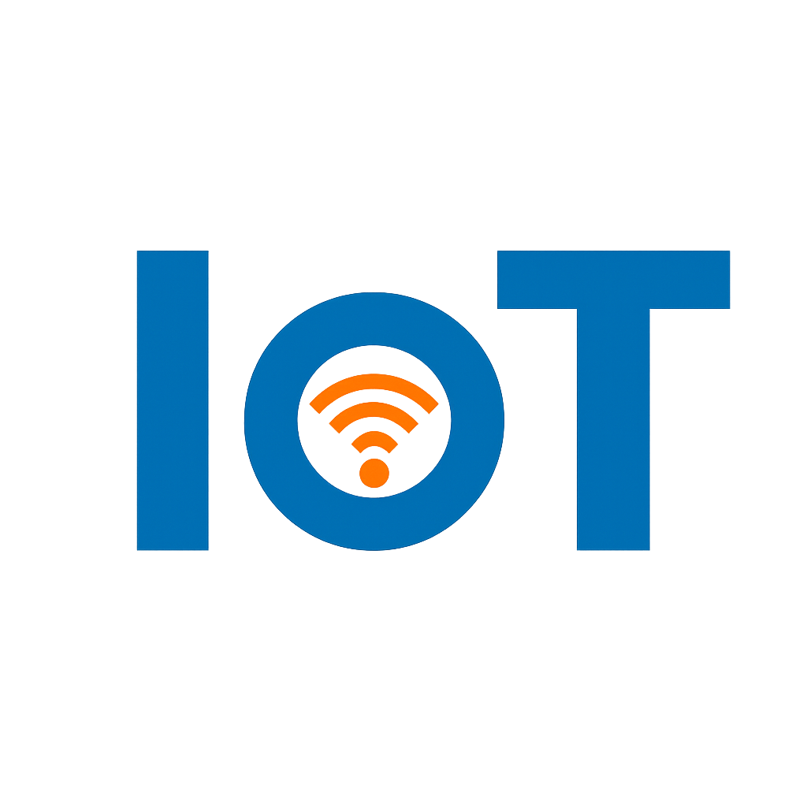

스마트 디바이스
컴퓨터 기능이 부여된 TV , 카메라 , 운동 장비와 같은 디바이스
환경 , 사용자 입력 또는 사용 패턴에서 데이터를 수집하고
인터넷을 통해 IoT APP 과 데이터를 송수신
IoT 어플리케이션
IoT 디바이스에서 수신한 데이터를 통합하는
서비스 및 소프트웨어의 모음
머신러닝 또는 딥러닝으로 데이터를 분석하고
데이터에 입각한 지능적인 결정을 내림
GUI
GUI 를 통해 IoT 디바이스 또는 디바이스 플릿을 관리
모바일 어플리케이션 또는 웹사이트가 대표적인 예
IoT 또는 사물 인터넷이라는 용어는 연결된 디바이스의 공통 네트워크를 의미하며,
디바이스와 클라우드 및 디바이스 간 통신을 용이하게 하는 기술을 의미하기도 합니다.
저렴한 컴퓨터 칩과 고대역폭 통신의 출현 덕분에 이제 수십억 개의 디바이스가 인터넷에 연결되어 있습니다.
이는 칫솔, 진공 청소기, 자동차 및 기계와 같은 일상적인 디바이스가 센서를 사용하여
데이터를 수집하고 사용자에게 지능적으로 응답할 수 있음을 의미합니다.
사물 인터넷(IoT)은 일상의 ‘사물’을 인터넷과 통합합니다.
컴퓨터 엔지니어들은 90년대부터 일상 용품에 센서와 프로세서를 추가해 왔습니다.
그러나 칩이 크고 부피가 커서 초기에는 진행이 느렸습니다.
RFID 태그라고 하는 저전력 컴퓨터 칩이 고가의 장비를 추적하는 데 처음 사용되었습니다.
컴퓨팅 디바이스의 크기가 줄어들면서 이러한 칩도 시간이 지남에 따라 더 작고, 빠르고, 스마트해졌습니다.
이제 컴퓨팅 파워를 작은 물건에 통합하는 비용이 상당히 감소했습니다.
예를 들어 전등 스위치와 같이 1MB 미만의 RAM이 내장된 MCU에 Alexa 음성 서비스 기능과의 연결을 추가할 수 있습니다.
가정, 기업 및 사무실을 IoT 디바이스로 채우는 데 관심이 집중함에 따라 사물 인터넷 산업 전체가 빠르게 발전했습니다.
이러한 스마트 객체는 자동으로 인터넷과 데이터를 주고받을 수 있습니다.
이러한 모든 "보이지 않는 컴퓨팅 디바이스" 및 이와 관련된 기술을 사물 인터넷이라고 총칭합니다.
사물 인터넷은 인간의 삶과 일에 광범위한 영향을 미칩니다.
사물 인터넷을 통해 기계는 힘든 일을 수행하고 지루한 태스크를 대신하여
삶을 더 건강하고 생산적이며 편안하게 만들 수 있습니다.
예를 들어 커넥티드 디바이스는 전체 아침 루틴을 바꿀 수 있습니다.
스누즈 버튼을 누르면 알람 시계가 자동으로 커피 머신을 켜고 블라인드를 걷습니다.
냉장고는 식료품이 거의 떨어졌음을 자동으로 감지하고 주문 배송을 요청합니다.
스마트 오븐은 그날의 메뉴를 알려줍니다.
미리 준비된 재료를 요리하고 점심이 준비되었는지 확인할 수도 있습니다.
커넥티드 카가 연료 보충을 위해 GPS를 자동으로 중지하도록 설정하면 스마트워치가 회의 일정을 잡습니다.
IoT 세계에서 기회는 무궁무진합니다.